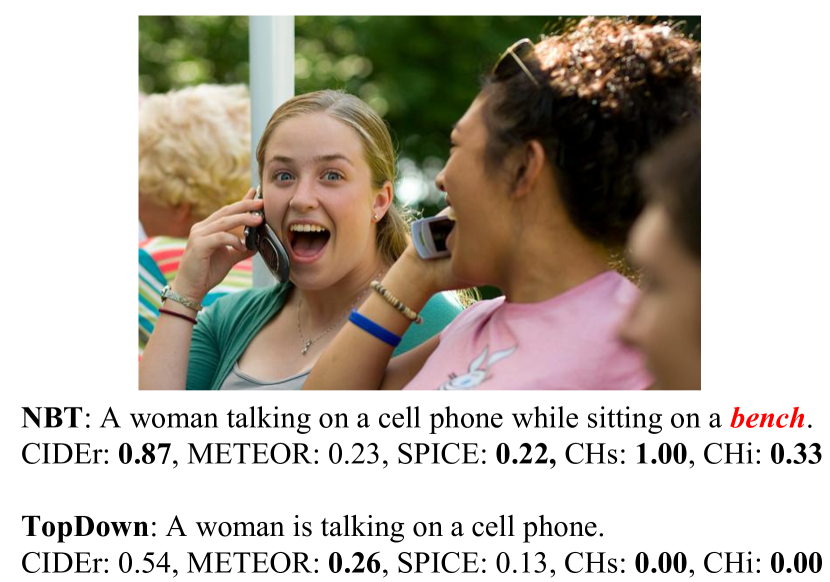
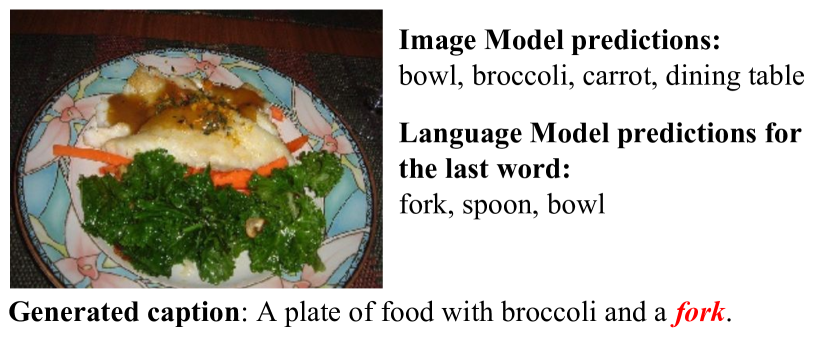
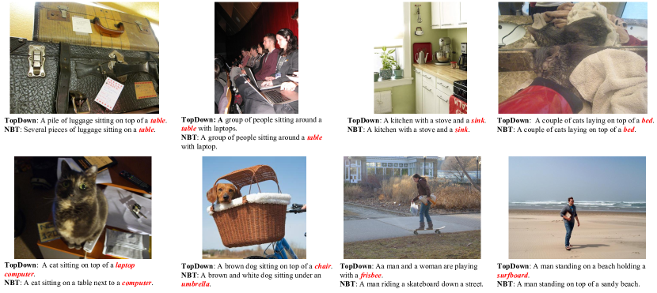
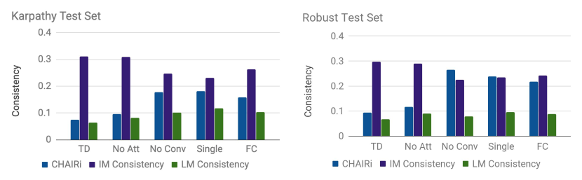
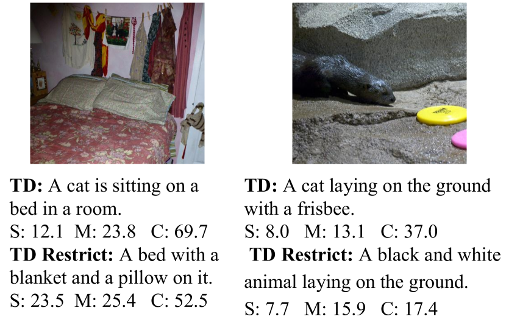
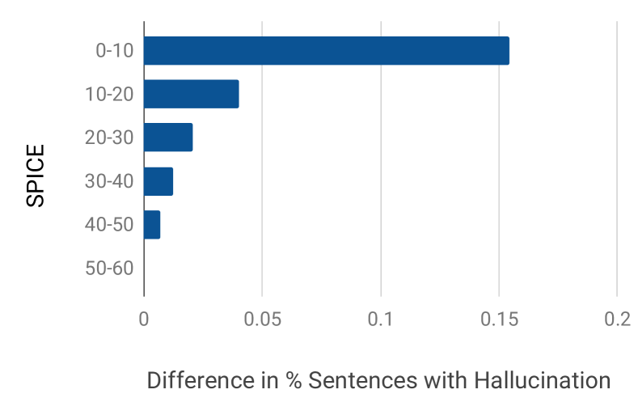

Object Hallucination in Image Captioning
Abstract
Despite continuously improving performance, contemporary image captioning models are prone to “hallucinating” objects that are not actually in a scene. One problem is that standard metrics only measure similarity to ground truth captions and may not fully capture image relevance. In this work, we propose a new image relevance metric to evaluate current models with veridical visual labels and assess their rate of object hallucination. We analyze how captioning model architectures and learning objectives contribute to object hallucination, explore when hallucination is likely due to image misclassification or language priors, and assess how well current sentence metrics capture object hallucination. We investigate these questions on the standard image captioning benchmark, MSCOCO, using a diverse set of models. Our analysis yields several interesting findings, including that models which score best on standard sentence metrics do not always have lower hallucination and that models which hallucinate more tend to make errors driven by language priors.
1 Introduction
Image captioning performance has dramatically improved over the past decade. Despite such impressive results, it is unclear to what extent captioning models actually rely on image content: as we show, existing metrics fall short of fully capturing the captions’ relevance to the image. In Figure 1 we show an example where a competitive captioning model, Neural Baby Talk (NBT) Lu et al. (2018), incorrectly generates the object “bench.” We refer to this issue as object hallucination.
While missing salient objects is also a failure mode, captions are summaries and thus generally not expected to describe all objects in the scene. On the other hand, describing objects that are not present in the image has been shown to be less preferable to humans. For example, the LSMDC challenge Rohrbach et al. (2017a) documents that correctness is more important to human judges than specificity. In another study, MacLeod et al. (2017) analyzed how visually impaired people react to automatic image captions. They found that people vary in their preference of either coverage or correctness. For many visually impaired who value correctness over coverage, hallucination is an obvious concern.

Besides being poorly received by humans, object hallucination reveals an internal issue of a captioning model, such as not learning a very good representation of the visual scene or overfitting to its loss function.
In this paper we assess the phenomenon of object hallucination in contemporary captioning models, and consider several key questions. The first question we aim to answer is: Which models are more prone to hallucination? We analyze this question on a diverse set of captioning models, spanning different architectures and learning objectives. To measure object hallucination, we propose a new metric, CHAIR (Caption Hallucination Assessment with Image Relevance), which captures image relevance of the generated captions. Specifically, we consider both ground truth object annotations (MSCOCO Object segmentation Lin et al. (2014)) and ground truth sentence annotations (MSCOCO Captions Chen et al. (2015)). Interestingly, we find that models which score best on standard sentence metrics do not always hallucinate less.
The second question we raise is: What are the likely causes of hallucination? While hallucination may occur due to a number of reasons, we believe the top factors include visual misclassification and over-reliance on language priors. The latter may result in memorizing which words “go together” regardless of image content, which may lead to poor generalization, once the test distribution is changed. We propose image and language model consistency scores to investigate this issue, and find that models which hallucinate more tend to make mistakes consistent with a language model.
Finally, we ask: How well do the standard metrics capture hallucination? It is a common practice to rely on automatic sentence metrics, e.g. CIDEr Vedantam et al. (2015), to evaluate captioning performance during development, and few employ human evaluation to measure the final performance of their models. As we largely rely on these metrics, it is important to understand how well they capture the hallucination phenomenon. In Figure 1 we show how two sentences, from NBT with hallucination and from TopDown model Anderson et al. (2018) – without, are scored by the standard metrics. As we see, hallucination is not always appropriately penalized. We find that by using additional ground truth data about the image in the form of object labels, our metric CHAIR allows us to catch discrepancies that the standard captioning metrics cannot fully capture. We then investigate ways to assess object hallucination risk with the standard metrics. Finally, we show that CHAIR is complementary to the standard metrics in terms of capturing human preference.
2 Caption Hallucination Assessment
We first introduce our image relevance metric, CHAIR, which assesses captions w.r.t. objects that are actually in an image. It is used as a main tool in our evaluation. Next we discuss the notions of image and language model consistency, which we use to reason about the causes of hallucination.
2.1 The CHAIR Metric
To measure object hallucination, we propose the CHAIR (Caption Hallucination Assessment with Image Relevance) metric, which calculates what proportion of words generated are actually in the image according to the ground truth sentences and object segmentations. This metric has two variants: per-instance, or what fraction of object instances are hallucinated (denoted as CHAIRi), and per-sentence, or what fraction of sentences include a hallucinated object (denoted as CHAIRs):
For easier analysis, we restrict our study to the 80 MSCOCO objects which appear in the MSCOCO segmentation challenge. To determine whether a generated sentence contains hallucinated objects, we first tokenize each sentence and then singularize each word. We then use a list of synonyms for MSCOCO objects (based on the list from Lu et al. (2018)) to map words (e.g., “player”) to MSCOCO objects (e.g., “person”). Additionally, for sentences which include two word compounds (e.g., “hot dog”) we take care that other MSCOCO objects (in this case “dog”) are not incorrectly assigned to the list of MSCOCO objects in the sentence. For each ground truth sentence, we determine a list of MSCOCO objects in the same way. The MSCOCO segmentation annotations are used by simply relying on the provided object labels.
We find that considering both sources of annotation is important. For example, MSCOCO contains an object “dining table” annotated with segmentation maps. However, humans refer to many different kinds of objects as “table” (e.g., “coffee table” or “side table”), though these objects are not annotated as they are not specifically “dining table”. By using sentence annotations to scrape ground truth objects, we account for variation in how human annotators refer to different objects. Inversely, we find that frequently humans will not mention all objects in a scene. Qualitatively, we observe that both annotations are important to capture hallucination. Empirically, we verify that using only segmentation labels or only reference captions leads to higher hallucination (and practically incorrect) rates.
2.2 Image Consistency
We define a notion of image consistency, or how consistent errors from the captioning model are with a model which predicts objects based on an image alone. To measure image consistency for a particular generated word, we train an image model and record or the probability of predicting the word given only the image. To score the image consistency of a caption we use the average of for all MSCOCO objects, where higher values mean that errors are more consistent with the image model. Our image model is a multi-label classification model with labels corresponding to MSCOCO objects (labels determined the same way as is done for CHAIR) which shares the visual features with the caption models.
2.3 Language Consistency
We also introduce a notion of language consistency, i.e. how consistent errors from the captioning model are with a model which predicts words based only on previously generated words. We train an LSTM Hochreiter and Schmidhuber (1997) based language model which predicts a word given previous words on MSCOCO data. We report language consistency as where is the rank of the predicted word in the language model. Again, for a caption we report average rank across all MSCOCO objects in the sentence and higher language consistency implies that errors are more consistent with the language model.
We illustrate image and language consistency in Figure 2, i.e. the hallucination error (“fork”) is more consistent with the Language Model predictions than with the Image Model predictions. We use these consistency measures in Section 3.3 to help us investigate the causes of hallucination.

3 Evaluation
In this section we present the findings of our study, where we aim to answer the questions posed in Section 1: Which models are more prone to hallucination? What are the likely causes of hallucination? How well do the standard metrics capture hallucination?
3.1 Baseline Captioning Models
We compare object hallucination across a wide range of models. We define two axes for comparison: model architecture and learning objective.
Model architecture. Regarding model architecture, we consider models both with and without attention mechanisms. In this work, we use “attention” to refer to any mechanism which learns to focus on different image regions, whether image regions be determined by a high level feature map, or by object proposals from a trained detector. All models are end-to-end trainable and use a recurrent neural network (LSTM Hochreiter and Schmidhuber (1997) in our case) to output text. For non-attention based methods we consider the FC model from Rennie et al. (2017) which incorporates visual information by initializing the LSTM hidden state with high level image features. We also consider LRCN Donahue et al. (2015) which considers visual information at each time step, as opposed to just initializing the LSTM hidden state with extracted features.
For attention based models, we consider Att2In Rennie et al. (2017), which is similar to the original attention based model proposed by Xu et al. (2015), except the image feature is only input into the cell gate as this was shown to lead to better performance. We then consider the attention model proposed by Anderson et al. (2018) which proposes a specific “top-down attention” LSTM as well as a “language” LSTM. Generally attention mechanisms operate over high level convolutional layers. The attention mechanism from Anderson et al. (2018) can be used on such feature maps, but Anderson et al. also consider feature maps corresponding to object proposals from a detection model. We consider both models, denoted as TopDown (feature map extracted from high level convolutional layer) and TopDown-BB (feature map extracted from object proposals from a detection model). Finally, we consider the recently proposed Neural Baby Talk (NBT) model Lu et al. (2018) which explicitly uses object detections (as opposed to just bounding boxes) for sentence generation.
| Cross Entropy | Self Critical | ||||||||||
| Model | Att. | S | M | C | CHs | CHi | S | M | C | CHs | CHi |
| LRCN* | 17.0 | 23.9 | 90.8 | 17.7 | 12.6 | 16.9 | 23.5 | 93.0 | 17.7 | 12.9 | |
| FC* | 17.9 | 24.9 | 95.8 | 15.4 | 11.0 | 18.4 | 25.0 | 103.9 | 14.4 | 10.1 | |
| Att2In* | ✓ | 18.9 | 25.8 | 102.0 | 10.8 | 7.9 | 19.0 | 25.7 | 106.7 | 12.2 | 8.4 |
| TopDown* | ✓ | 19.9 | 26.7 | 107.6 | 8.4 | 6.1 | 20.4 | 27.0 | 117.2 | 13.6 | 8.8 |
| TopDown-BB † | ✓ | 20.4 | 27.1 | 113.7 | 8.3 | 5.9 | 21.4 | 27.7 | 120.6 | 10.4 | 6.9 |
| NBT † | ✓ | 19.4 | 26.2 | 105.1 | 7.4 | 5.4 | - | - | - | - | |
| Cross Entropy | GAN | ||||||||||
| GAN ‡ | 18.7 | 25.7 | 100.4 | 10.7 | 7.7 | 16.6 | 22.7 | 79.3 | 8.2 | 6.5 | |
Learning objective. All of the above models are trained with the standard cross entropy (CE) loss as well as the self-critical (SC) loss proposed by Rennie et al. (2017) (with an exception of NBT, where only the CE version is included). The SC loss directly optimizes the CIDEr metric with a reinforcement learning technique. We additionally consider a model trained with a GAN loss Shetty et al. (2017) (denoted GAN), which applies adversarial training to obtain more diverse and “human-like” captions, and their respective non-GAN baseline with the CE loss.
TopDown deconstruction. To better evaluate how each component of a model might influence hallucination, we “deconstruct” the TopDown model by gradually removing components until it is equivalent to the FC model. The intermediate networks are NoAttention, in which the attention mechanism is replaced by mean pooling, NoConv in which spatial feature maps are not input into the network (the model is provided with fully connected feature maps), SingleLayer in which only one LSTM is included in the model, and finally, instead of inputting visual features at each time step, visual features are used to initialize the LSTM embedding as is done in the FC model. By deconstructing the TopDown model in this way, we ensure that model design choices and hyperparameters do not confound results.
Implementation details. All the baseline models employ features extracted from the fourth layer of ResNet-101 He et al. (2016), except for the GAN model which employs ResNet-152. Models without attention traditionally use fully connected layers as opposed to convolutional layers. However, as ResNet-101 does not have intermediate fully connected layers, it is standard to average pool convolutional activations and input these features into non-attention based description models. Note that this means the difference between the NoAttention and NoConv model is that the NoAttention model learns a visual embedding of spatial feature maps as opposed to relying on pre-pooled feature maps. All models except for TopDown-BB, NBT, and GAN are implemented in the same open source framework from Luo et al. (2018).111https://github.com/ruotianluo/self-critical.pytorch
Training/Test splits. We evaluate the captioning models on two MSCOCO splits. First, we consider the split from Karpathy et al. Karpathy and Fei-Fei (2015), specifically in that case the models are trained on the respective Karpathy Training set, tuned on Karpathy Validation set and the reported numbers are on the Karpathy Test set. We also consider the Robust split, introduced in Lu et al. (2018), which provides a compositional split for MSCOCO. Specifically, it is ensured that the object pairs present in the training, validation and test captions do not overlap. In this case the captioning models are trained on the Robust Training set, tuned on the Robust Validation set and the reported numbers are on the Robust Test set.
3.2 Which Models Are More Prone To Hallucination?
We first present how well competitive models perform on our proposed CHAIR metric (Table 1). We report CHAIR at sentence-level and at instance-level (CHs and CHi in the table). In general, we see that models which perform better on standard evaluation metrics, perform better on CHAIR, though this is not always true. In particular, models which optimize for CIDEr frequently hallucinate more. Out of all generated captions on the Karpathy Test set, anywhere between 7.4% and 17.7% include a hallucinated object. When shifting to more difficult training scenarios in which new combinations of objects are seen at test time, hallucination consistently increases (Table 2).
Karpathy Test set. Table 1 presents object hallucination on the Karpathy Test set. All sentences are generated using beam search and a beam size of 5. We note a few important trends. First, models with attention tend to perform better on the CHAIR metric than models without attention. As we explore later, this is likely because they have a better understanding of the image. In particular, methods that incorporate bounding box attention (as opposed to relying on coarse feature maps), consistently have lower hallucination as measured by our CHAIR metric. Note that the NBT model does not perform as well on standard captioning metrics as the TopDown-BB model but has lower hallucination. This is perhaps because bounding box proposals come from the MSCOCO detection task and are thus “in-domain” as opposed to the TopDown-BB model which relies on proposals learned from the Visual Genome Krishna et al. (2017) dataset. Second, frequently training models with the self-critical loss actually increases the amount of hallucination. One hypothesis is that CIDEr does not penalize object hallucination sufficiently, leading to both increased CIDEr and increased hallucination. Finally, the LRCN model has a higher hallucination rate than the FC model, indicating that inputting the visual features only at the first step, instead of at every step, leads to more image relevant captions.
We also consider a GAN based model Shetty et al. (2017) in our analysis. We include a baseline model (trained with CE) as well as a model trained with the GAN loss.222Sentences were procured directly from the authors. Unlike other models, the GAN model uses a stronger visual network (ResNet-152) which could explain the lower hallucination rate for both the baseline and the GAN model. Interestingly, when comparing the baseline and the GAN model (both trained with ResNet-152), standard metrics decrease substantially, even though human evaluations from Shetty et al. (2017) demonstrate that sentences are of comparable quality. On the other hand, hallucination decreases, implying that the GAN loss actually helps decrease hallucination. Unlike the self critical loss, the GAN loss encourages sentences to be human-like as opposed to optimizing a metric. Human-like sentences are not likely to hallucinate objects, and a hallucinated object is likely a strong signal to the discriminator that a sentence is generated, and is not from a human.

We also assess the effect of beam size on CHAIR. We find that generally beam search decreases hallucination. We use beam size of 5, and for all models trained with cross entropy, it outperforms lower beam sizes on CHAIR. However, when training models with the self-critical loss, beam size sometimes leads to worse performance on CHAIR. For example, on the Att2In model trained with SC loss, a beam size of 5 leads to on CHAIRs and on CHAIRi, while a beam size of 1 leads to on CHAIRs and on CHAIRi.
| Att | S | M | C | CHs | CHi | |
|---|---|---|---|---|---|---|
| FC* | 15.5 | 22.7 | 76.2 | 21.3 | 15.3 | |
| Att2In* | ✓ | 16.9 | 24.0 | 85.8 | 14.1 | 10.1 |
| TopDown* | ✓ | 17.7 | 24.7 | 89.8 | 11.3 | 7.9 |
| NBT † | ✓ | 18.2 | 24.9 | 93.5 | 6.2 | 4.2 |
Robust Test set. Next we review the hallucination behavior on the Robust Test set (Table 2). For almost all models the hallucination increases on the Robust split (e.g. for TopDown from 8.4% to 11.3% of sentences), indicating that the issue of hallucination is more critical in scenarios where test examples can not be assumed to have the same distribution as train examples. We again note that attention is helpful for decreasing hallucination. We note that the NBT model actually has lower hallucination scores on the robust split. This is in part because when generating sentences we use the detector outputs provided by Lu et al. (2018). Separate detectors on the Karpathy test and robust split are not available and the detector has access to images in the robust split during training. Consequently, the comparison between NBT and other models is not completely fair, but we include the number for completeness.

In addition to the Robust Test set, we also consider a set of MSCOCO in which certain objects are held out, which we call the Novel Object split Hendricks et al. (2016). We train on the training set outlined in Hendricks et al. (2016) and test on the Karpathy test split, which includes objects unseen during training. Similarly to the Robust Test set, we see hallucination increase substantially on this split. For example, for the TopDown model hallucination increases from 8.4% to 12.1% for CHAIRs and 6.0% to 9.1% for CHAIRi.
We find no obvious correlation between the average length of the generated captions and the hallucination rate. Moreover, vocabulary size does not correlate with hallucination either, i.e. models with more diverse descriptions may actually hallucinate less. We notice that hallucinated objects tend to be mentioned towards the end of the sentence (on average at position 6, with average sentence length 9), suggesting that some of the preceding words may have triggered hallucination. We investigate this below.
Which objects are hallucinated and in what context?
Here we analyze which MSCOCO objects tend to be hallucinated more often and what are the common preceding words and image context. Across all models the super-category Furniture is hallucinated most often, accounting for of all hallucinated objects. Other common super-categories are Outdoor objects, Sports and Kitchenware. On the Robust Test set, Animals are often hallucinated. The dining table is the most frequently hallucinated object across all models (with an exception of GAN, where person is the most hallucinated object). We find that often words like “sitting” and “top” precede the “dining table” hallucination, implying the two common scenarios: a person “sitting at the table” and an object “sitting on top of the table” (Figure 3, row 1, examples 1, 2). Similar observations can be made for other objects, e.g. word “kitchen” often precedes “sink” hallucination (Figure 3, row 1, example 3) and “laying” precedes “bed” (Figure 3, row 1, example 4). At the same time, if we look at which objects are actually present in the image (based on MSCOCO object annotations), we can similarly identify that presence of a “cat” co-occurs with hallucinating a “laptop” (Figure 3, row 2, example 1), a “dog” – with a “chair” (Figure 3, row 2, example 2) etc. In most cases we observe that the hallucinated objects appear in the relevant scenes (e.g. “surfboard” on a beach), but there are cases where objects are hallucinated out of context (e.g. “bed” in the bathroom, Figure 3, row 1, example 4).
3.3 What Are The Likely Causes Of Hallucination?
In this section we investigate the likely causes of object hallucination. We have earlier described how we deconstruct the TopDown model to enable a controlled experimental setup. We rely on the deconstructed TopDown models to analyze the impact of model components on hallucination.
First, we summarize the hallucination analysis on the deconstructed TopDown models (Table 3). Interestingly, the NoAttention model does not do substantially worse than the full model (w.r.t. sentence metrics and CHAIR). However, removing Conv input (NoConv model) and relying only on FC features, decreases the performance dramatically. This suggests that much of the gain in attention based models is primarily due to access to feature maps with spatial locality, not the actual attention mechanism. Also, similar to LRCN vs. FC in Table 1, initializing the LSTM hidden state with image features, as opposed to inputting image features at each time step, leads to lower hallucination (Single Layer vs. FC). This is somewhat surprising, as a model which has access to image information at each time step should be less likely to “forget” image content and hallucinate objects. However, it is possible that models which include image inputs at each time step with no access to spatial features overfit to the visual features.
| Karpathy Split | S | M | C | CHs | CHi |
|---|---|---|---|---|---|
| TD | 19.5 | 26.1 | 103.4 | 10.8 | 7.5 |
| No Attention | 18.8 | 25.6 | 99.7 | 14.2 | 9.5 |
| No Conv | 15.7 | 22.9 | 81.3 | 25.7 | 17.8 |
| Single Layer | 15.5 | 22.7 | 80.2 | 25.7 | 18.2 |
| FC | 16.4 | 23.3 | 85.1 | 23.6 | 15.8 |
Now we investigate what causes hallucination using the deconstructed TopDown models and the image consistency and language consistency scores, introduced in Sections 2.2 and 2.3 which capture how consistent the hallucinations errors are with image- / language-only models.
Figure 4 shows the CHAIR metric, image consistency and language consistency for the deconstructed TopDown models on the Karpathy Test set (left) and the Robust Test set (right). We note that models with less hallucination tend to make errors consistent with the image model, whereas models with more hallucination tend to make errors consistent with the language model. This implies that models with less hallucination are better at integrating knowledge from an image into the sentence generation process. When looking at the Robust Test set, Figure 4 (right), which is more challenging, as we have shown earlier, we see that image consistency decreases when comparing to the same models on the Karpathy split, whereas language consistency is similar across all models trained on the Robust split. This is perhaps because the Robust split contains novel compositions of objects at test time, and all of the models are heavily biased by language.
Finally, we measure image and language consistency during training for the FC model and note that at the beginning of training errors are more consistent with the language model, whereas towards the end of training, errors are more consistent with the image model. This suggests that models first learn to produce fluent language before learning to incorporate visual information.

3.4 How Well Do The Standard Metrics Capture Hallucination?
In this section we analyze how well SPICE Anderson et al. (2016), METEOR Banerjee and Lavie (2005), and CIDEr Vedantam et al. (2015) capture hallucination. All three metrics do penalize sentences for mentioning incorrect words, either via an F score (METEOR and SPICE) or cosine distance (CIDEr). However, if a caption mentions enough words correctly, it can have a high METEOR, SPICE, or CIDEr score while still hallucinating specific objects.
Our first analysis tool is the TD-Restrict model. This is a modification of the TopDown model, where we enforce that MSCOCO objects which are not present in an image are not generated in the caption. We determine which words refer to objects absent in an image following our approach in Section 2.1. We then set the log probability for such words to a very low value. We generate sentences with the TopDown and TD-Restrict model with beam search of size , meaning all words produced by both models are the same, until the TopDown model produces a hallucinated word.
We compare which scores are assigned to such captions in Figure 5. TD-Restrict generates captions that do not contain hallucinated objects, while TD hallucinates a “cat” in both cases. In Figure 5 (left) we see that CIDEr scores the more correct caption much lower. In Figure 5 (right), the TopDown model incorrectly calls the animal a “cat.” Interestingly, it then correctly identifies the “frisbee,” which the TD-Restrict model fails to mention, leading to lower SPICE and CIDEr.
| CIDEr | METEOR | SPICE | |
|---|---|---|---|
| FC | 0.258 | 0.240 | 0.318 |
| Att2In | 0.228 | 0.210 | 0.284 |
| TopDown | 0.185 | 0.168 | 0.215 |
In Table 4 we compute Pearson correlation coefficient between individual sentence scores and the absence of hallucination, i.e. CHAIRs; we find that SPICE consistently correlates higher with CHAIRs. E.g., for the FC model the correlation for SPICE is 0.32, while for METEOR and CIDEr – around 0.25.

We further analyze the metrics in terms of their predictiveness of hallucination risk. Predictiveness means that a certain score should imply a certain percentage of hallucination. Here we show the results for SPICE and the captioning models FC and TopDown. For each model and a score interval (e.g. ) we compute the percentage of captions without hallucination (CHAIRs). We plot the difference between the percentages from both models (TopDown - FC) in Figure 6. Comparing the models, we note that even when scores are similar (e.g., all sentences with SPICE score in the range of ), the TopDown model has fewer sentences with hallucinated objects. We see similar trends across other metrics. Consequently, object hallucination can not be always predicted based on the traditional sentence metrics.
Is CHAIR complementary to standard metrics?
In order to measure usefulness of our proposed metrics, we have conducted the following human evaluation (via the Amazon Mechanical Turk). We have randomly selected 500 test images and respective captions from 5 models: non-GAN baseline, GAN, NBT, TopDown and TopDown - Self Critical. The AMT workers were asked to score the presented captions w.r.t. the given image based on their preference. They could score each caption from 5 (very good) to 1 (very bad). We did not use ranking, i.e. different captions could get the same score; each image was scored by three annotators, and the average score is used as the final human score. For each image we consider the 5 captions from all models and their corresponding sentence scores (METEOR, CIDEr, SPICE). We then compute Pearson correlation between the human scores and sentence scores; we also consider a simple combination of sentence metrics and 1-CHAIRs or 1-CHAIRi by summation. The final correlation is computed by averaging across all 500 images. The results are presented in Table 5. Our findings indicate that a simple combination of CHAIRs or CHAIRi with the sentence metrics leads to an increased correlation with the human scores, showing the usefulness and complementarity of our proposed metrics.
| Metric | Metric | Metric | |
|---|---|---|---|
| +(1-CHs) | +(1-CHi) | ||
| METEOR | 0.269 | 0.299 | 0.304 |
| CIDEr | 0.282 | 0.321 | 0.322 |
| SPICE | 0.248 | 0.277 | 0.281 |
Does hallucination impact generation of other words?
Hallucinating objects impacts sentence quality not only because an object is predicted incorrectly, but also because the hallucinated word impacts generation of other words in the sentence. Comparing the sentences generated by TopDown and TD-Restrict allows us to analyze this phenomenon. We find that after the hallucinated word is generated, the following words in the sentence are different 47.3% of the time. This implies that hallucination impacts sentence quality beyond simply naming an incorrect object. We observe that one hallucination may lead to another, e.g. hallucinating a “cat” leading to hallucinating a “chair”, hallucinating a “dog” – to a “frisbee”.
4 Discussion
In this work we closely analyze hallucination in object captioning models. Our work is similar to other works which attempt to characterize flaws of different evaluation metrics Kilickaya et al. (2016), though we focus specifically on hallucination. Likewise, our work is related to other work which aims to build better evaluation tools (Vedantam et al. (2015), Anderson et al. (2016), Cui et al. (2018)). However, we focus on carefully quantifying and characterizing one important type of error: object hallucination.
A significant number of objects are hallucinated in current captioning models (between 5.5% and 13.1% of MSCOCO objects). Furthermore, hallucination does not always agree with the output of standard captioning metrics. For instance, the popular self critical loss increases CIDEr score, but also the amount of hallucination. Additionally, we find that given two sentences with similar CIDEr, SPICE, or METEOR scores from two different models, the number of hallucinated objects might be quite different. This is especially apparent when standard metrics assign a low score to a generated sentence. Thus, for challenging caption tasks on which standard metrics are currently poor (e.g., the LSMDC dataset Rohrbach et al. (2017b)), the CHAIR metric might be helpful to tease apart the most favorable model. Our results indicate that CHAIR complements the standard sentence metrics in capturing human preference.
Additionally, attention lowers hallucination, but it appears that much of the gain from attention models is due to access to the underlying convolutional features as opposed the attention mechanism itself. Furthermore, we see that models with stronger image consistency frequently hallucinate fewer objects, suggesting that strong visual processing is important for avoiding hallucination.
Based on our results, we argue that the design and training of captioning models should be guided not only by cross-entropy loss or standard sentence metrics, but also by image relevance. Our CHAIR metric gives a way to evaluate the phenomenon of hallucination, but other image relevance metrics e.g. those that incorporate missed salient objects, should also be investigated. We believe that incorporating visual information in the form of ground truth objects in a scene (as opposed to only reference captions) helps us better understand the performance of captioning models.
References
- Anderson et al. (2016) Peter Anderson, Basura Fernando, Mark Johnson, and Stephen Gould. 2016. Spice: Semantic propositional image caption evaluation. In European Conference on Computer Vision, pages 382–398. Springer.
- Anderson et al. (2018) Peter Anderson, Xiaodong He, Chris Buehler, Damien Teney, Mark Johnson, Stephen Gould, and Lei Zhang. 2018. Bottom-up and top-down attention for image captioning and vqa. In Proceedings of the IEEE Conference on Computer Vision and Pattern Recognition.
- Banerjee and Lavie (2005) Satanjeev Banerjee and Alon Lavie. 2005. Meteor: An automatic metric for mt evaluation with improved correlation with human judgments. In Proceedings of the ACL Workshop on Intrinsic and Extrinsic Evaluation Measures for Machine Translation and/or Summarization, pages 65–72.
- Chen et al. (2015) Xinlei Chen, Hao Fang, Tsung-Yi Lin, Ramakrishna Vedantam, Saurabh Gupta, Piotr Dollár, and C Lawrence Zitnick. 2015. Microsoft coco captions: Data collection and evaluation server. arXiv preprint arXiv:1504.00325.
- Cui et al. (2018) Yin Cui, Guandao Yang, Andreas Veit, Xun Huang, and Serge Belongie. 2018. Learning to evaluate image captioning. In CVPR.
- Donahue et al. (2015) Jeffrey Donahue, Lisa Anne Hendricks, Sergio Guadarrama, Marcus Rohrbach, Subhashini Venugopalan, Kate Saenko, and Trevor Darrell. 2015. Long-term recurrent convolutional networks for visual recognition and description. In Proceedings of the IEEE Conference on Computer Vision and Pattern Recognition, pages 2625–2634.
- He et al. (2016) Kaiming He, Xiangyu Zhang, Shaoqing Ren, and Jian Sun. 2016. Deep residual learning for image recognition. In Proceedings of the IEEE conference on computer vision and pattern recognition, pages 770–778.
- Hendricks et al. (2016) Lisa Anne Hendricks, Subhashini Venugopalan, Marcus Rohrbach, Raymond Mooney, Kate Saenko, and Trevor Darrell. 2016. Deep compositional captioning: Describing novel object categories without paired training data. In Proceedings of the IEEE Conference on Computer Vision and Pattern Recognition, pages 1–10.
- Hochreiter and Schmidhuber (1997) Sepp Hochreiter and Jürgen Schmidhuber. 1997. Long short-term memory. Neural computation, 9(8):1735–1780.
- Karpathy and Fei-Fei (2015) Andrej Karpathy and Li Fei-Fei. 2015. Deep visual-semantic alignments for generating image descriptions. In Proceedings of the IEEE conference on computer vision and pattern recognition, pages 3128–3137.
- Kilickaya et al. (2016) Mert Kilickaya, Aykut Erdem, Nazli Ikizler-Cinbis, and Erkut Erdem. 2016. Re-evaluating automatic metrics for image captioning. In European Chapter of the Association for Computational Linguistics.
- Krishna et al. (2017) Ranjay Krishna, Yuke Zhu, Oliver Groth, Justin Johnson, Kenji Hata, Joshua Kravitz, Stephanie Chen, Yannis Kalantidis, Li-Jia Li, David A Shamma, et al. 2017. Visual genome: Connecting language and vision using crowdsourced dense image annotations. International Journal of Computer Vision, 123(1):32–73.
- Lin et al. (2014) Tsung-Yi Lin, Michael Maire, Serge Belongie, James Hays, Pietro Perona, Deva Ramanan, Piotr Dollár, and C Lawrence Zitnick. 2014. Microsoft coco: Common objects in context. In European conference on computer vision, pages 740–755. Springer.
- Lu et al. (2018) Jiasen Lu, Jianwei Yang, Dhruv Batra, and Devi Parikh. 2018. Neural baby talk. In Proceedings of the IEEE Conference on Computer Vision and Pattern Recognition.
- Luo et al. (2018) Ruotian Luo, Brian Price, Scott Cohen, and Gregory Shakhnarovich. 2018. Discriminability objective for training descriptive captions. In Proceedings of the IEEE Conference on Computer Vision and Pattern Recognition.
- MacLeod et al. (2017) Haley MacLeod, Cynthia L. Bennett, Meredith Ringel Morris, and Edward Cutrell. 2017. Understanding blind people’s experiences with computer-generated captions of social media images. In Proceedings of the 2017 SIGCHI Conference on Human Factors in Computing Systems.
- Rennie et al. (2017) Steven J Rennie, Etienne Marcheret, Youssef Mroueh, Jarret Ross, and Vaibhava Goel. 2017. Self-critical sequence training for image captioning. In Proceedings of the IEEE Conference on Computer Vision and Pattern Recognition.
- Rohrbach et al. (2017a) Anna Rohrbach, Makarand Tapaswi, Atousa Torabi, Tegan Maharaj, Marcus Rohrbach, Sanja Fidler Christopher Pal, and Bernt Schiele. 2017a. The Joint Video and Language Understanding Workshop: MovieQA and The Large Scale Movie Description Challenge (LSMDC). https://sites.google.com/site/describingmovies/lsmdc-2017.
- Rohrbach et al. (2017b) Anna Rohrbach, Atousa Torabi, Marcus Rohrbach, Niket Tandon, Christopher Pal, Hugo Larochelle, Aaron Courville, and Bernt Schiele. 2017b. Movie description. International Journal of Computer Vision, 123(1):94–120.
- Shetty et al. (2017) Rakshith Shetty, Marcus Rohrbach, Lisa Anne Hendricks, Mario Fritz, and Bernt Schiele. 2017. Speaking the same language: Matching machine to human captions by adversarial training. In Proceedings of the IEEE International Conference on Computer Vision (ICCV).
- Vedantam et al. (2015) Ramakrishna Vedantam, C Lawrence Zitnick, and Devi Parikh. 2015. Cider: Consensus-based image description evaluation. In Proceedings of the IEEE Conference on Computer Vision and Pattern Recognition, pages 4566–4575.
- Xu et al. (2015) Kelvin Xu, Jimmy Ba, Ryan Kiros, Kyunghyun Cho, Aaron Courville, Ruslan Salakhudinov, Rich Zemel, and Yoshua Bengio. 2015. Show, attend and tell: Neural image caption generation with visual attention. In International Conference on Machine Learning, pages 2048–2057.